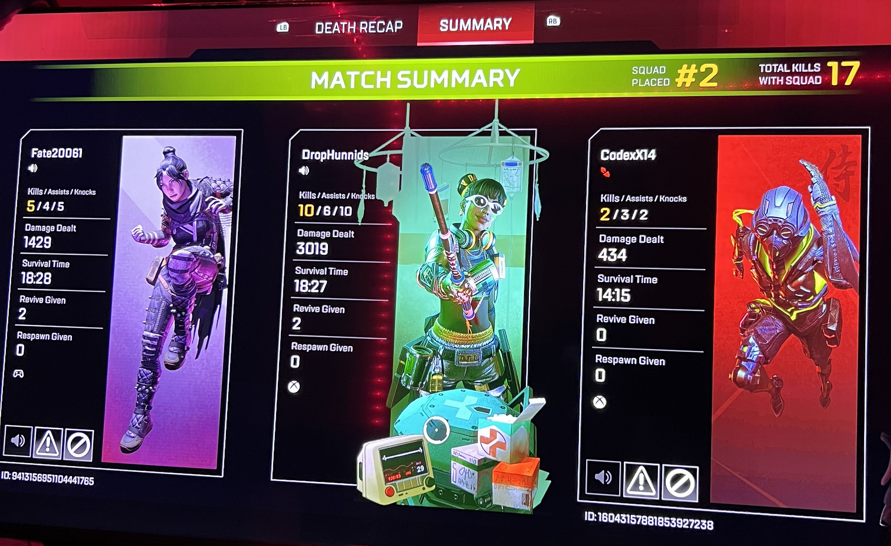
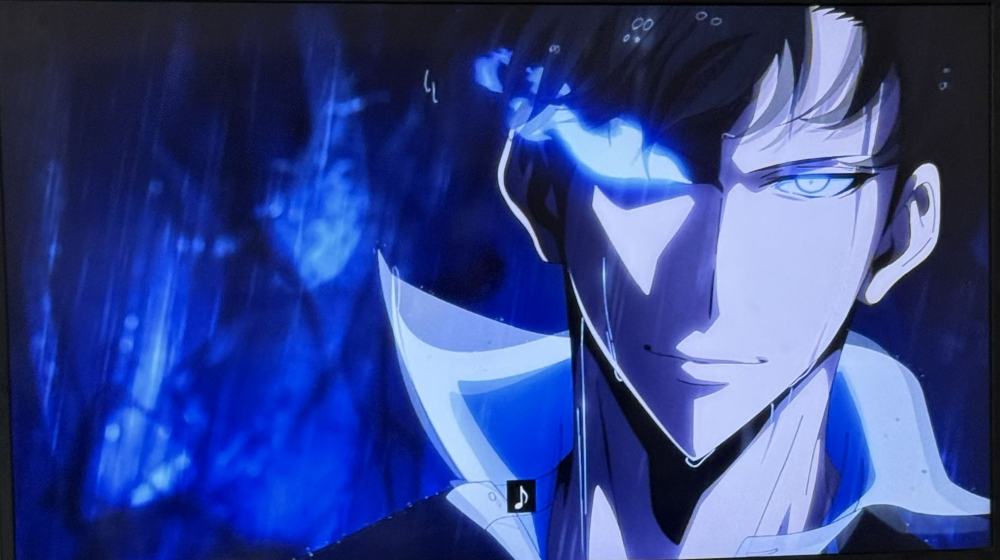
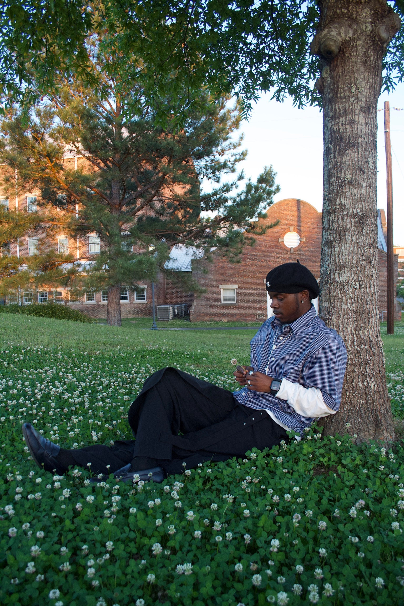
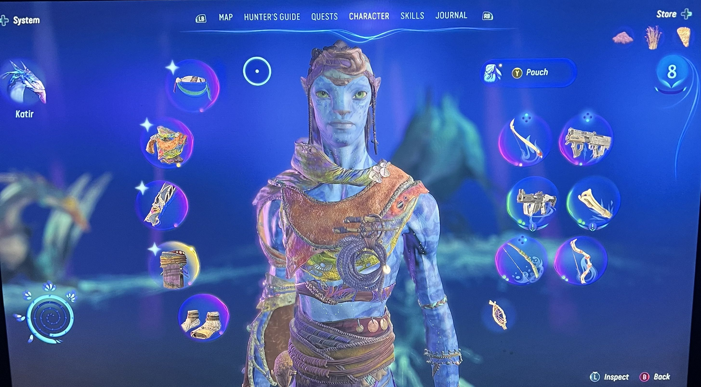
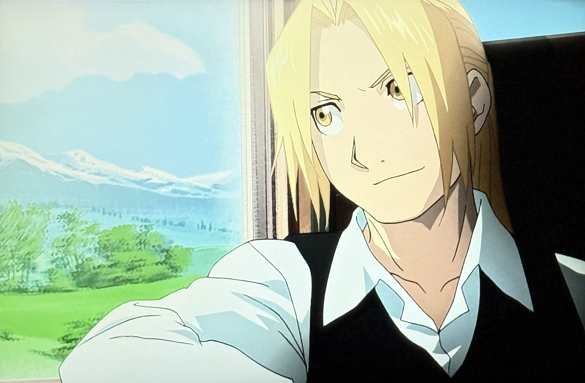

Hey there, I'm Tashamii Parker.
Driven and detail-oriented junior with growing experience in programming, data structures, and software design. Passionate about developing innovative solutions to real-world problems through code. Known for strong leadership, adaptability, and collaboration across multidisciplinary teams.
01 — About
A little about me
I am a Computer Science student at Tuskegee University, with a strong foundation in programming, data structures, and object-oriented design. I enjoy building interactive applications that combine logic, creativity, and user-focused functionality. Through projects like a Dungeons & Dragons-style battle system and a virtual pet simulator, I’ve gained hands-on experience applying core programming concepts to real-world scenarios. These experiences have strengthened my problem-solving skills and deepened my understanding of software development.
I am constantly looking to improve my technical abilities, learn new technologies, and take on challenges that push me to grow as a developer. Whether working independently or collaborating with others, I bring adaptability, initiative, and a strong commitment to producing high-quality work. When I'm not coding, you'll find me listening to music, watching anime with friends, or diving deep into research. I believe the best solutions come from curiosity and collaboration.
02 — Education
Where I've learned
Coursework
- Data Structures & Algorithms
- Operating Systems
- Computer Networks
- Machine Learning
- Databases
- Software Engineering
Bachelor of Science in Computer Science
03 — Experience
Where I've worked
Professional experience and positions
IT Support / Geek Squad Intern
- Diagnosed and resolved hardware, software, and network issues for customers
- Collaborated with team members to streamline repair workflows and reduce service turnaround time
- Assisted customers with installations, system setups, and troubleshooting
IT / CyberSecurity Intern
- Supported troubleshooting and system maintenance tasks
- Collaborated with peers on technical projects
- Applied foundational concepts to analyze system vulnerabilities
Project One — Dungeons & Dragons Fantasy Battle Game
- Developed a turn-based fantasy battle game in C++ using object-oriented programming with multiple character classes
- Implemented core game mechanics including dice based attack calculations, user input handling, and dynamic health tracking
- Designed modular class structures and turn based combat logic to simulate strategic player interactions
Project Two — Virtual Pet Simulator
- Built a Tamagotchi style virtual pet simulator in C++ using inheritance, polymorphism, and dynamic memory allocatio
- Implemented interactive features such as feeding, playing, mood tracking, and ASCII based pet visualization
- Utilized file input and command driven gameplay to manage multiple pets and simulate real time behavior
06 — Creative
Beyond the code
Outside of CS, I enjoy playing video games, watching anime, and fashion. Here's a glimpse into my creative side.






07 — Volunteering
Giving back
Leadership and community involvement
Member
- Mentored undergraduate students in academic success, leadership development, and personal growth
- Coordinated and supported workshops, seminars, and outreach initiatives promoting responsibility and community engagement
- Partnered with faculty and community organizations to execute service projects and leadership driven programs
08 — Skills
What I work with
Software Development
Proficient in C++ with experience in object-oriented programming, data structures, and dynamic memory management.
Tools & Technologies
Visual Studio Code, Geany IDE, Git, GitHub, Makefiles, Linux.
Core Concepts
Object-Oriented Programming (OOP), Inheritance, Polymorphism, File I/O, Pointers, Recursion, Algorithm Design.
Teamwork
Collaborated on group programming projects, contributed to shared codebases, and communicated effectively to solve technical challenges.
Leadership
Mentored undergraduate students through Boyz2Gentlemen, supporting academic growth, leadership development, and community engagement.
Web Development
Basic experience with HTML, CSS, and JavaScript for building responsive personal portfolio websites.
09 — Contact
Let's connect
I'm always open to new opportunities, collaborations, or just a good conversation about tech. Feel free to reach out—I'd love to hear from you.
Open to opportunities
Currently looking for internships and collaborations for Summer 2026 and beyond.
↓ Download Resume